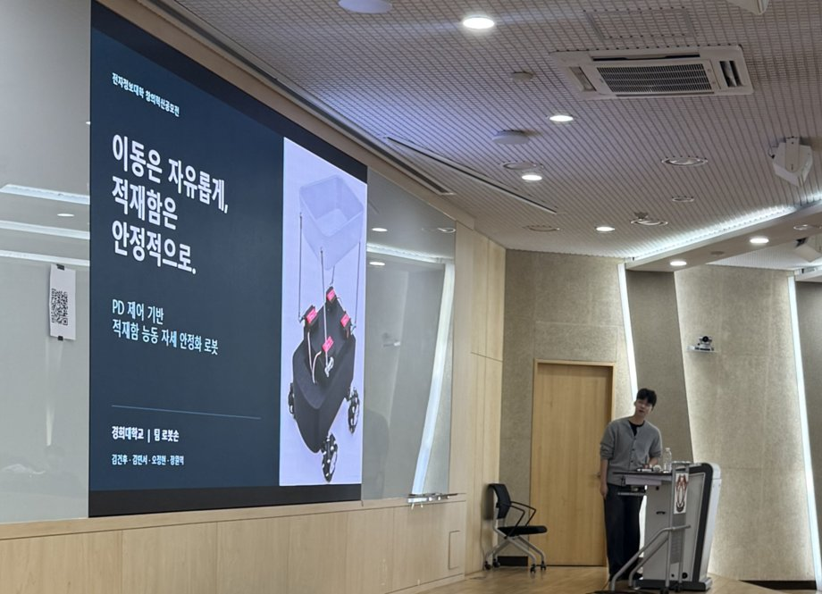

Co-authored publication공저 논문
Brain–kidney connection: Impact on cerebral blood flow with estimated glomerular filtration rates in healthy brains
Chinese Medical Journal 2026;139(19):3000–3002.
DOI: 10.1097/CM9.0000000000004249ABOUT ME
Hi, I’m Won Ik Jang, an undergraduate at Kyung Hee University studying Biomedical Engineering and Electronic Engineering. I’m interested in robot learning and control, and I’m currently conducting research with dual-arm robots.안녕하세요, 경희대학교에서 생체의공학과 전자공학을 공부하고 있는 장원익입니다. 로봇 학습과 제어에 관심이 있으며, 현재 양팔 로봇을 활용한 연구를 하고 있습니다.
I enjoy bringing learned models to real hardware and improving their behavior through experiments. I like turning ideas into working systems.학습한 모델을 실제 하드웨어에 적용하고, 실험을 통해 동작을 개선하는 과정에 흥미를 느낍니다. 아이디어를 직접 구현하고 실제로 움직이는 시스템으로 연결하는 것을 좋아합니다.

Co-authored publication공저 논문
Chinese Medical Journal 2026;139(19):3000–3002.
DOI: 10.1097/CM9.0000000000004249